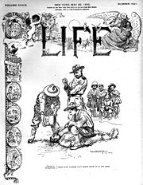

| Atomic shadows at Nagasaki |

When U.S. Secretary of War William Howard Taft arrived in Nagasaki Harbor on July 31, 1905, he and the huge imperial retinue about the SS Manchuria were given a rapturous welcome.
As the ship departed that evening, notes James Bradley in his infuriatingly informative history The Imperial Cruise, Nagasaki's mayor toasted Taft and his party with champagne. The Sumo-sized American functionary then led the throng in a war chant to celebrate Japan's battlefield triumphs over Russian forces in Manchuria:
Japanese emperor -- banzai [may he live ten thousand years]!
Japanese navy -- banzai!
Japanese army -- banzai!
At least some of those who joined in Taft's celebration would be immolated almost exactly 40 years later, some of them memorialized in the "atomic shadows" etched into walls by the nuclear fireball that vaporized them. As they lifted their hands skyward, those Nagasaki residents couldn't have imagined that their government's imperial benefactor would someday annihilate them.
The frenzied reception granted to Taft and his entourage was generated, at least in part, by the celebrity of Alice Roosevelt, Teddy's oldest daughter, a rebellious girl who was something of a pre-electronic media Britney Spears. (One widely circulated photo depicted the First Wild Child wearing a boa constrictor draped around her neck and shoulders.) But Japan's government, in which Washington had played a key role, was eager to please its imperial patron.
| Harvard-educated Japanese emissary Kentaro Kaneko. |

Japan had a role in TR's vision for the Pacific. As long as Japan kept Russia in check, did its part to pry open China to Washington's corporate clients, and didn't make a play for America's overseas colony in the Philippines, it could claim dominion over Korea and Manchuria under the terms of a "Monroe Doctrine for Asia," Roosevelt privately told Baron Kentaro Kaneko, Tokyo's emissary to the United States.
"Japan is the only nation in Asia that understands the principles and methods of Western civilization," Roosevelt wrote to Kaneko on July 8, 1905. "She has proved that she can assimilate Western civilization, yet not break up her own heritage. All the Asiatic nations are now faced with the urgent necessity of adjusting themselves to the present age. Japan should be their natural leader in that process, and their protector during the transition stage, much as the United States assumed the leadership of the American continent many years ago, and by means of the Monroe Doctrine preserved Latin American nations from European interference, while they were maturing their independence."
Kaneko repeatedly urged Roosevelt to make public his support for a Japan-dominated "Monroe Doctrine for Asia." Teddy unctuously assured the Japanese emissary that while he couldn't do so as president, he would gladly offer public support once he had left office.
As Bradley points out, if Congress had been aware of Roosevelt's secret dealings, "perhaps a senator would have challenged Roosevelt to think through the consequences of the United States' carving out a chunk of Asia for Japan to nibble on. Perhaps a congressman might have inspired Roosevelt to imagine a Japan that later would chafe at Teddy's leash."
At the time, however, America's imperial elite was too enthralled by the Japanese victories in Manchuria -- where, as Teddy privately exulted, they were "playing my game" -- to consider what would happen when Japan's imperial ambitions could no longer be restrained by Washington.
"The victory of the Japanese is a distinct triumph for Christianity," pontificated Reverend Robert MacArthur of New York's Calvary Baptist Church following the Battle of Tsushima. "The new civilization of Japan is largely the result of Christian teaching. A very great proportion of Japan's leading men today, especially those who fight her battles on land and sea, with such skill and valor, profess the Christian faith."
Japan was emulating "Christian" teaching in the sense that any pious adulterer could claim to be acting on Jimmy Swaggart's example. The Japanese government's duplicitous and aggressive behavior faithfully mimicked that of the ascendant "Christian" power of the age.
Under McKinley and Roosevelt, the U.S. government offered a detailed tutorial in the ruthless acquisition of territory through aggression, and the pitiless exercise of power to suppress uprisings against imperial rule. The Philippines provided the classroom, and the Japanese would prove to be eager and observant students.
After Washington wrested the Philippines from Spain, Admiral George Dewey (whose assault on the decrepit Spanish fleet -- ancient wooden vessels tied up in rows in Manila Bay -- wasn't much different from the Japanese attack at Pearl Harbor) sent a pair of emissaries to compile a report on the Filipino civic culture. Under the leadership of Emilio Aguinaldo, hailed as the "George Washington" of the Philippines during the war with Spain, the Filipinos had developed all of the institutions of representative government, and were firmly committed to the rule of law.
The report commissioned by Dewey was quickly buried by the War Department. After all, the prevailing doctrine held that the inhabitants of the Philippines -- like other non-Anglo-Saxon peoples -- weren't fit for self-government, and wouldn't be ready until after at least a few generations of benevolent, paternalistic rule by their racial superiors.
This meant, Admiral Dewey would later write, that the U.S. Government would have to "establish our authority by force against the very people whom we sought to benefit." After learning of the victory of Teddy Roosevelt -- an apostle of imposing Anglo-Saxon "authority" by force -- in the 1900 presidential election, Private Robert Austill, who was serving in the Philippines, paraphrased Dewey's conclusion in terms that were both earthier and more candid: "The people of the United States want us to kill all the men, f**k all the women, and raise up a new race in these Islands."
It was the islands Washington coveted as an outpost for the projection of military power into Asia. The Filipinos were an encumbrance.
“We do not want the Filipinos,” declared the San Francisco Argonaut in 1898. “We want the Philippines. The islands are enormously rich, but unfortunately they are infested with Filipinos. There are many millions there and, it is to be feared, their extinction will be slow.”
Fortunately, the Filipinos are not extinct, despite the U.S. Government's devoted efforts. In a 41-month period from 1898 to1902, roughly 20,000 Filipino guerrillas were killed. At least ten times that number of civilians were slaughtered as well. Some chroniclers estimate that more than two million Filipinos were liberated of their mortal cares during America's lethal application of muscular Christianity in the islands.
"The United States later fought World War II over a period of fifty-six months with approximately four hundred thousand American deaths," observes Bradley, who has written two acclaimed books about the Pacific War (Flags of our Fathers and Flyboys). "So Adolf Hitler and Hideki Tojo, with their mechanized weaponry, killed about the same per month -- seventy-two hundred -- as American civilizers did in the Philippines."
| Call this an "imperial baptism": US "ministering angels" at work. |

Among the benefits of Christian culture the American Army shared with the Filipinos was the ancient ritual called the "water cure."
During World War II, American P.O.W.s were subjected to waterboarding by Japanese interrogators who, as convicted war criminals, experienced the long drop to the end of a hangman's rope.
Decades earlier, American soldiers sent to "pacify" and "civilize" the archipelago -- “We come as ministering angels, not as despots,” warbled Senator Knute Nelson in praise of that noble venture -- would chant a marching cadence called "The Water Cure" in happy anticipation of their ministry:
Hurray, hurrah. We bring the Jubilee.
Hurray, Hurrah. The flag that makes him free.
Shove in the nozzle deep and let him taste of liberty.
Shouting the battle cry of freedom!
We've come across the bounding main to kindly spread around
Sweet liberty whenever there are rebels to be found.
So hurry with the syringe boys. We've got him down and bound.
Shouting the battle cry of freedom!...
Oh pump it up in him till he swells like a toy balloon.
The fool pretends that liberty is not a precious boon.
But we'll contrive to make him see the beauty of it soon.
Shouting the battle cry of freedom!
Grover Flint, a first lieutenant in the 35th Infantry who served in the Philippines for a year and a half, later described how America's Ministering Angels used the "water cure" to fill Filipinos to the brim with liquid liberty:
"He [the victim] is simply held down, and then water is poured into his face, down his throat and nose from a jar, and that is kept up until the man gives some sign of giving in or becoming unconscious, and when he becomes unconscious he is simply rolled aside and he is allowed to come to.... His suffering must be that of a man who is drowning, but he can not drown."
 |
| "Let him taste of liberty!" |

The Filipinos, explained this exponent of pagan barbarism, are "an illiterate, semi-savage people, who are waging war, not against tyranny, but against Anglo-Saxon order and decency."
The "decency" of which Funston spoke so piously was famously displayed in a village called LaNog, the entire population of which was murdered on the orders of Captain Fred McDonald -- except for a single comely mestizo woman who was gang-raped by McDonald's officers and then turned over to the enlisted men for similar treatment.
A particularly vigorous display of "Anglo-Saxon decency" took place in March 1906, when the Army mowed down roughly 1,000 Muslim men, women, and children who had taken refuge in the crater of an inert volcano.
"I congratulate you and the officers and men of your command upon the brilliant feat of arms wherein you and they so well upheld the honor of the American flag," Roosevelt wrote, without a whisper of irony, in a congratulatory cable to the commander.
| "A brilliant feat of arms": The Moro Massacre. |

On the home front, Roosevelt and his comrades relentlessly de-humanized the Filipinos -- or, as they were commonly called, "Pacific Negroes."
The 1904 St. Louis World's Fair would be a propaganda triumph for Roosevelt. Hundreds of thousands flocked to exhibits promoting America's imperial thrust into Asia, and depicting Filipinos (as well as Chinese and "uncivilized," non-westernized Japanese) as evolutionary throwbacks in need of Washington's stern but enlightened rule. Millions received this indoctrination second-hand through press coverage.
"As a keepsake souvenir to take home to the kids, fairgoers could purchase an `Album of Philippine Types,'" recalls Bradley. "Each Filipino type was represented by two photographs that looked like mug shots, which they were -- Roosevelt's scientists had searched Bilibid Prison in Manila to find `typical' Pacific Negroes. Fairgoers viewed more than one thousand photographs depicting a Philippines populated by robbers, murderers, and rapists."
Filipinos conscripted into America's imperial military were among the troops who marched past Roosevelt's reviewing stand during his second inaugural in March 1905. TR was heard commenting that these assimilated "Pacific Negroes" were "rejoicing in their shackles."
I wonder if Japan's short-lived conquest of the Philippines produced similar expressions of self-satisfaction from its imperial ruling class.
I also find myself wondering how many of the Americans who perished in the Bataan Death March had been given a copy of the Roosevelt administration's "Album of Philippine Types" as children in order to advance their education regarding their duty to promote "Anglo-Saxon civilization" at bayonet point.
And I detect nearly toxic levels of irony in the fact that at least some of the Americans who would later perish in the Pacific War saw the World's Fair exhibit celebrating the achievements of the "Japanese Empire" -- Washington's sub-contractor in "civilizing" Northern Asia.
| Monument to 26 Christians martyred in Nagasaki during the 16th Century. |

"In 1905, when he green-lit Japanese expansion, Roosevelt was forty-six years old and Baron Kaneko was fifty-two," notes Bradley. "Roosevelt would be dead fifteen years later, while Kaneko would live to hear Franklin Roosevelt condemn Japan for doing what Theodore Roosevelt had recommended."
Kaneko died on May 16, 1942, just weeks before the Battle of Midway effectively ended Japan's dream of dominating the Pacific.
To his credit, Kaneko exercised whatever influence he could muster to encourage peaceful relations between Japan and the United States; he opposed war with America as late as 1941. Had he lived three years longer Kaneko may have witnessed the aftermath of the August 9, 1945 atomic assault on Nagasaki, where just a generation earlier the skies were rent by American-led war chants in praise of the Imperial Japanese military.
Any help you can provide to keep Pro Libertate on-line is VERY appreciated! Thanks, and God bless.

Be sure to tune in each Saturday night from 8:00-11:00 Mountain Time for Pro Libertate Radio on the Liberty News Radio Network.
Dum spiro, pugno!
21 comments:
I've lived in Japan for several years, not as military mind you, and have even stood at ground zero in Nagasaki. It's sobering to say the least. Likewise I've been in Dresden and took in the city from a Cathedral tower and looked upon what even to this day are the remains of firebombed buildings and basements. The flippant attitude exhibited by our military towards the "enemy" is something I believe will come back to haunt them. Never the less it would take quite a slap in the face to wake up the sleep walking masses. Today we have the same attitudes being brought to bear on Afghans, Iraqi's and, heaven forbid, Iranians. Twains War Prayer should be required reading in every church pulpit come Memorial Day. Now THAT would be speaking truth to power.
Manifest Destiny and Social Darwinism were stylish political philosophies around 1900. Cecil Rhodes was heavily influenced by British professors espousing the latter and worked during his final years, cut short by painful heart failure, to establish the Council on Foreign Relations with the (original) intention of advancing the idea of natural Anglo-Saxon supremacy. American politicians were, of course, compelled to add a dash of force-laden Christianity to the brew.
When the bombs are coming in I will hoist a middle finger and grab my privates by the concrete wall. Nagasaki was just to test a different style of bomb and was not a military necessity. Civilians were a target in WW2 for all sides from Guernica, Rotterdam, London, Dresden, Hiroshima.
Teddy the Roughrider, another example of giving Christianity a bad name.
Okay, so it's no longer fashionable to talk about our grand Anglo-Saxon superiority. We have a new name for it, but I heartily agree with Mr. Swanson on how little has changed otherwise. Even after God has struck us down in the coming years, most will never understand why.
I went to James Bradley's website and explored it a bit, time allowing. I tried in vain to quickly get a firm image in my mind of his worldview/philosophy in general and was unsuccessful. He's a sly individual, or is the word shy? Nah, he can't be shy since he's appeared on the media circuit and speaker circuit many times. I did, however, come away with a superficial idea of his bent, which no doubt further ingrains my deep cynicism about folk in general, and well-heeled folk in particular.
He's a fan of MSNBC. A fan of any media outlet, national/international or local (all are pro-Leviathan, state-sanctioned) statist communication medium, is suspect right away.
Reading the first chapter of his upcoming book he writes:
The years in which I wrote Flags of Our Fathers--from 1995 to 1999--were years of peace and plenty. We weren't at war and we were experiencing the longest period of peacetime economic expansion in American history, which included a balanced budget and a federal surplus. Now, in 2010, things are very different.
He bathes the Clinton regime with "peace and love" accolades, conveniently omitting Fostergate, the slaughter at Waco, Chinagate, the Lizard Queen's cattle futures controversy festering since their early days as Arkansas' first couple, and the whole Whitewater scam. Yeah, I know, it would take a whole book to describe these matters alone, but why shower the Clintler-era with such positivism? Nonsense. Each Führer simply expands on the previous regime's Leviathanic triumphs and it all aggregates the burdens upon we commoners, or us ...uh... "mere" mundanes.
I'd venture to say Mr. Bradley is likely to be someone who favors statist policy in some critical areas, with the dubious exception of war, perhaps. He seems to think peace can triumph with his "Peace" Foundation. I wish him good luck with that endeavor, but I think he labors in vain to that end as I don't believe there will be any lasting worldwide peace until the Prince of Peace returns. But I digress...
About your synopsis of the 26th Führer of the United State, much of it culled from Mr. Bradley's penmanship, I would agree. I never did think much of Theodore Roosevelt and that was even before having an inkling of his secret machinations with Japan in 1905. After all, Roosevelt was a regulatory freight train beginning its first hallowed journeys (Wilson later accelerated and further fueled it) and started the national park system. I think the "green outside, red inside" eco-Leviathan movement got its true genesis during his reign. Nixon many decades later in 1970 only stamped perpetual eco-Leviathanism in concrete with the creation of OSHA and the EPA.
But I'd say the creation of the DOI (an idea supported by many previous Führers, but had lain dormant) by Congress during the waning days of Polk's regime was the genesis of all subsequent centralized Leviathanic machinations that have since germinated pertaining to domestic non-LE affairs, Indian displacement, natural resources, etc. ad nauseam.
That all said, the non-fiction subject matter -- which seems to be loaded with statist intrigue -- nevertheless piques my interest so I may just get Imperial Cruise for in-depth perusal. And, of course, being that it's supposedly a true chronicle, it's got to be more interesting a read than the other contemporary favorites of the mundane mass of our day, such as various award-winning wereseal and unicorn fantasies.
Finally, a question Will. When are you going to begin your YT (or other video service) video commentaries(?) or debates(?) and such? I'd really like to see you invite for debate, and go head-to-head, on the issues you write about so fervently on your blog here with some of the very folk that figure prominently in your pieces. Sigh...well, we've retained our right to dreams of grandeur for Pro Libertate anyway.
Looking forward to your radio show as always. Peace out.
Here's a link to the "Album of Philippine Types" that Will speaks of - view free online:
http://quod.lib.umich.edu/cgi/t/text/text-idx?c=philamer;idno=afl1247.0001.001
Thanks for the link to the Album, David. Dr. Mengele would be proud. Who knows... maybe he even got hold of a copy while honing his craft at Auschwitz busily "profiling" the sub-humans for his eugenics studies.
Dixie... "Fostergate"? Whoah Nelly! Now talk about rattling old bones. Mustn't we, like the great and mighty "O", look beyond the past and instead forge a glorious goose-stepping future? Let not the sins of yesterday dim our resolve to commit fresh ones tomorrow!
Will, not trying to litter the comments with only my thoughts seeing as I can't edit past musings, but is that or is that not a cover of THE Life magazine with someone getting tortured? Now that's a shocker. I wonder if anyone from Time/Life would comment on that today? Maybe someone needs to do an updated cover for today with a montage of the past and present.
And having read Twains take on the Moro massacre it becomes clearer to me, and makes me all the more appreciative, of the man who penned The War Prayer. He saw things painfully as they were. Now if only the knuckleheads in our congregations could do likewise we'd not have the sort of government and be involved in the evil adventures we currently are engaged in. But, alas, its been over a hundred years since that time and things haven't improved. The message conveyed? The Church, more specifically mainstream Christianity, has failed, failed over centuries, and failed miserably. How so? Because if it really was doing what it was supposed to do, we wouldn't be having these sorts of debates. It would simply be a given. Should good men an women stop "trying" to make the world a better place? Never! Individual conscience, and not the collectivist non-thought exhibited by our failed "leaders" and their congregants, whether in church or governance, should compel us to move forward.
Here's a link to a blog about the sword Tojo wanted to kill himself with.
http://tojos-hara-kiri-sword.com/?p=525
MoT, that is a photo of an actual Life magazine cover. It was actually intended as a criticism of the "water cure," since the figures in the background represent self-satisfied European imperial powers who recognize that America no longer had the moral standing to condemn colonial abuses.
When it came to promoting the core ethical teaching of the Christian faith (the Golden Rule), Twain the unbeliever was consistently a better "Christian" than the statist clergy of his era, or ours.
Another slam-bang, Will, and just when I needed it.
I maintain a blog directed at Mormons, and I'm constantly fighting the gung-ho brand of "patriotism" that is all too often exhibited by my fellow latter-day Saints who don't have a clue that their religion forbids the kind of foreign adventurism they find so laudable.
I linked to your piece above in response to someone who considers the American role as always lily-white, and the enemy as always the instigator. That response can be found here:
http://puremormonism.blogspot.com/2009/03/toby-keith-and-destruction-of-nephites.html#comment-form
Alan, I LOVE the title of your essay!
Incidentally, J. Reuben Clark is one of my favorite 20th Century American statesmen. His was a brave and often lonely voice.....
The Brown Man's Burden
by Henry Labouchère
1899
Pile on the brown man's burden
To gratify your greed;
Go, clear away the "niggers"
Who progress would impede;
Be very stern, for truly
'Tis useless to be mild
With new-caught, sullen peoples,
Half devil and half child.
Pile on the brown man's burden;
And, if ye rouse his hate,
Meet his old-fashioned reasons
With Maxims up to date.
With shells and dumdum bullets
A hundred times made plain
The brown man's loss must ever
Imply the white man's gain.
Pile on the brown man's burden,
compel him to be free;
Let all your manifestoes
Reek with philanthropy.
And if with heathen folly
He dares your will dispute,
Then, in the name of freedom,
Don't hesitate to shoot.
Pile on the brown man's burden,
And if his cry be sore,
That surely need not irk you--
Ye've driven slaves before.
Seize on his ports and pastures,
The fields his people tread;
Go make from them your living,
And mark them with his dead.
Pile on the brown man's burden,
And through the world proclaim
That ye are Freedom's agent--
There's no more paying game!
And, should your own past history
Straight in your teeth be thrown,
Retort that independence
Is good for whites alone.
Thank God for you, Will. Your efforts are appreciated by me, for one, and many others.
I hope to be able to continue to support your efforts, even in very small ways, for a long time to come.
Keep up the great work.
Mr Grigg:
Fine article. One question:
Do you have any references on the claim that the Water Cure song was actually sung by soldiers willingly doing the deed? It sounds too much like a sarcastic song parody.
Indeed, there seems to be evidence it is a parody of Marching Through Georgia
Life magazine seems to attribute it to S. E. Kiser, who wrote poetry and was published in the Chicago Record Herald. Not sure he didn't mean it with heavy sarcasm.
pduggie -- Thanks for the kind comments.
The "Water Cure" song does seem like a parody, but there was a lot about the Spanish-American War that, in retrospect, blurs the line between official propaganda and contemporary satire. (Vide the Life magazine cover I used as an illustration, which was actually a protest but could just as easily been a celebration, given the tenor of the time.)
The author of that song, as far as I can tell, was a soldier named Albert Gardner from the 1st U.S. Cavalry. It was described as a "would-be comic song," but not as a satire; this would make part of the "Napalm sticks to kids" genre.
In researching this piece I signed up for a BBS for history buffs and reenactors of the FILAM(Filipino-American) war --
http://pinoyhistory.proboards.com/index.cgi
A thread there on FILAM War Songs listed "The Water Cure Pt.I" as a legitimate marching song from the period, set (as you point out) to the tune of Sherman's abominable "Marching Through Georgia." (Incidentally, the Japanese Army reportedly used that same melody -- with different lyrics, of course -- during its occupation of the Philippines decades later.)
In the interests of brevity, I'll post a second comment about this matter anon....
pduggie -- here's a link to a lengthy (and perhaps somewhat tendentious) academic essay about the FILAM war, in which the "Water Cure" song is mentioned:
http://japanfocus.org/-paul_a_-kramer/1745
Here's the relevant excerpt about the "Water Cure" song, in context:
U.S. soldiers also increasingly defined the entire Filipino population as the enemy. Race became a sanction for exterminist war, the means by which earlier distinctions between combatants and non-combatants—already fragile—eroded or collapsed entirely. As long as popular support for the rebellion was conceived of as “political”—as a matter of decisions, interests and incentives—within an ultimately pluralistic Filipino polity, the task of the U.S. Army was to “persuade” Filipinos of various sectors to accept U.S. sovereignty. That this “persuasion” might take terrible, total forms was something that U.S. officials readily acknowledged. But no such persuasion was possible where “ethnological homogeneity” governed over reason. The Filipinos were one united “race”; its “savagery” placed it outside the bounds of “civilized” warfare: the two explanatory halves converged, pincer-like, into racial exterminist war as the only means to “peace.”
Close ties between race and exterminist warfare can be found in the ever-present racial terms employed by U.S. soldiers’ in their descriptions of violence against prisoners and civilians. In 1902, for example, Albert Gardner, in Troop B of the 1st U.S. Cavalry, composed a would-be comic song dedicated to “water-cure” torture—in which filthy water was poured into the mouths of Filipino prisoners, drowning them--sung to the tune of the Battle Hymn of the Republic:
1st
Get the good old syringe boys and fill it to the brim
We’ve caught another nigger and we’ll operate on him
Let someone take the handle who can work it with a vim
Shouting the battle cry of freedom
Chorus
Hurrah Hurrah We bring the Jubilee
Hurrah Hurrah The flag that makes him free
Shove in the nozzel [sic] deep and let him taste of liberty
Shouting the battle cry of freedom. [93]
Dixie Dog, my brother,
You state:
"He bathes the Clinton regime with "peace and love" accolades, conveniently omitting Fostergate, the slaughter at Waco, Chinagate, the Lizard Queen's cattle futures controversy festering since their early days as Arkansas' first couple, and the whole Whitewater scam."
You neglected to mention Clinton's 1999 78 day "peace and love" bombing of Serbia!
How's that for American "exceptionalism" at work?
The statists of both wings of the National Party make me sick to my stomach.
I curse them all.
Yeah, I found the reference to all the songs on that board too.
While [93] isn't identified, the quotes seem to go to Paul Kramer's book __The blood of government: race, empire, the United States, & the Philippines__, p141. (it on google books)
The claim there isn't that everyone knew that this song was sung by troops marching. It is part of (a despicable person) Albert Gardner's writings, and the most Kramer says is "the song form suggests singers and possible public performance".
So we have an awful song from the scrapbook of an awful guy in the cavalry, and bad things done by soldiers too. could be that everyone sang it, but not sure. Just was concerned that it sounded like every last person who did the water cure was monstrously happy about it, when the evidence isn't so direct.
But thank you for your research. Its interesting sorting out all the ins and outs of history.
Post a Comment